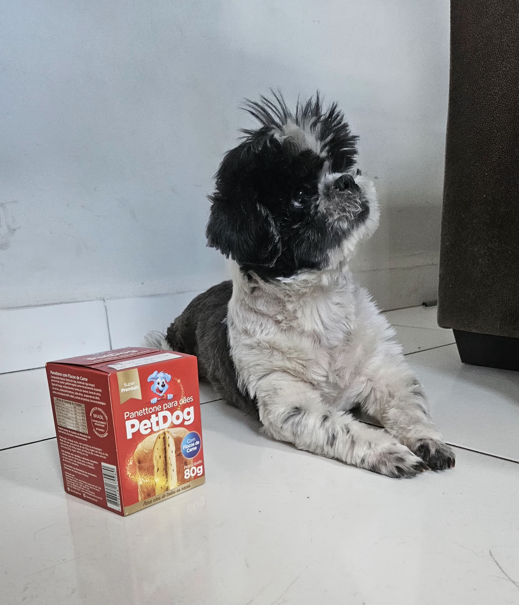

Olá! Meu nome é Mariah Gabriella Pedrosa Teixeira
Sobre mim
Eu tenho dezesseis anos, meus pais são divorciados, eu vivo com minha mãe, mas também passo bastante tempo com meu pai. Na escola tenho alguns amigos e um namorado. Também tenho um cachorro da raça Shih tzu, chamado Biel.
üé® Interesses e Hobbies
Gosto muito de música, filmes e séries. Nos meus momentos livres, adoro desenhar, jogar e aprender mais sobre programação. Não esperava me identificar tanto com o curso, mas tenho gostado bastante e vejo que tenho mais facilidade com ele do que meus colegas da sala.

üíª Curso T√©cnico de Informática para Internet
Um dos maiores motivos para eu ter escolhido o curso é porque meu pai trabalha na área e sempre me incentivou a aprender sobre. Ainda não decidi uma profissão específica, mas gostaria de seguir na área.